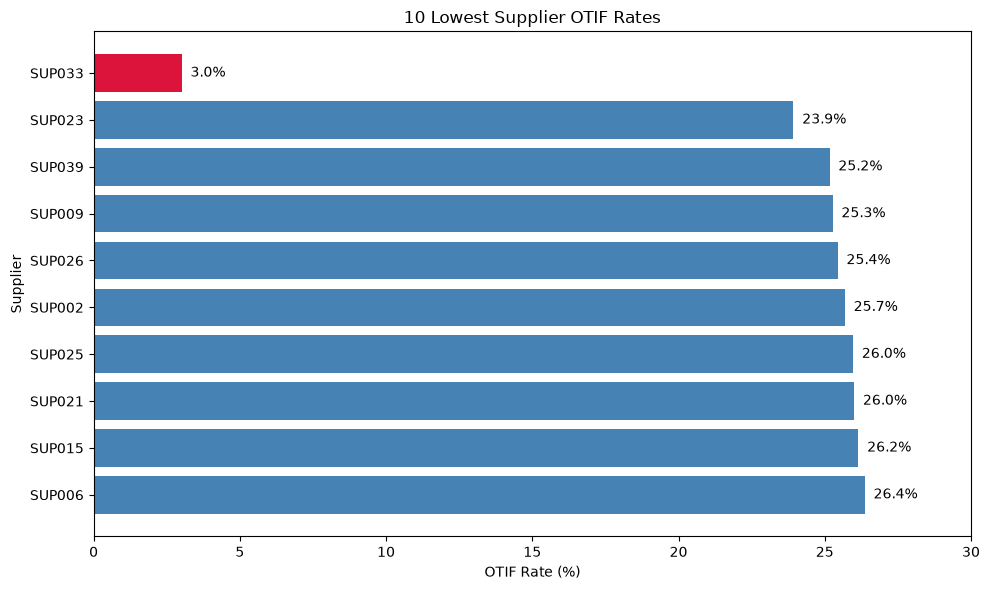
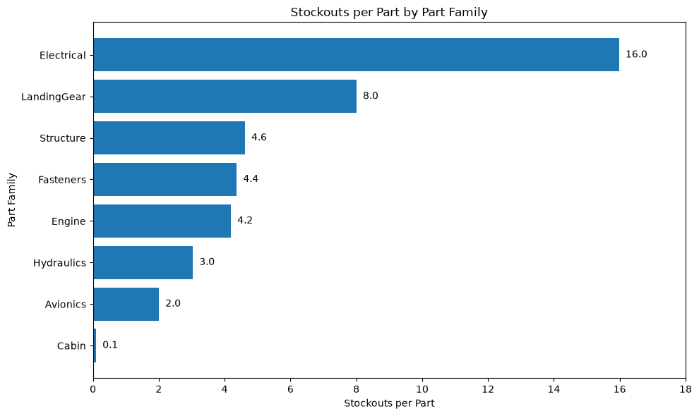
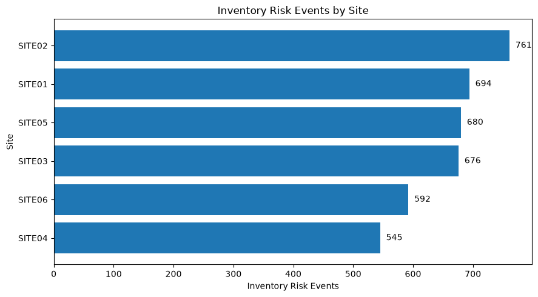
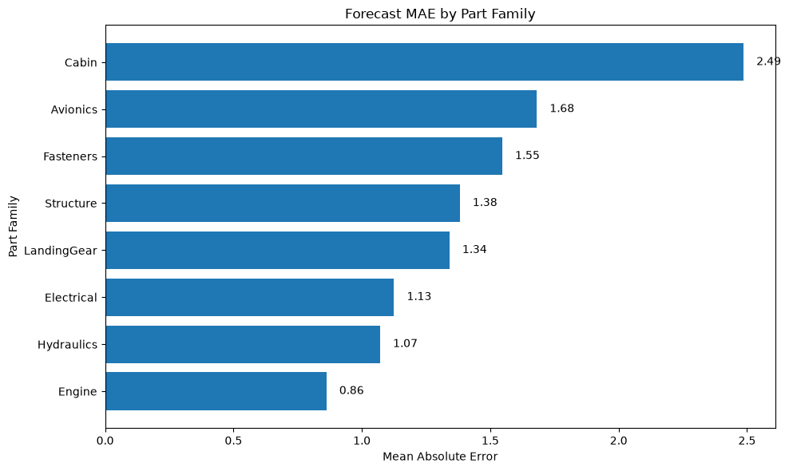
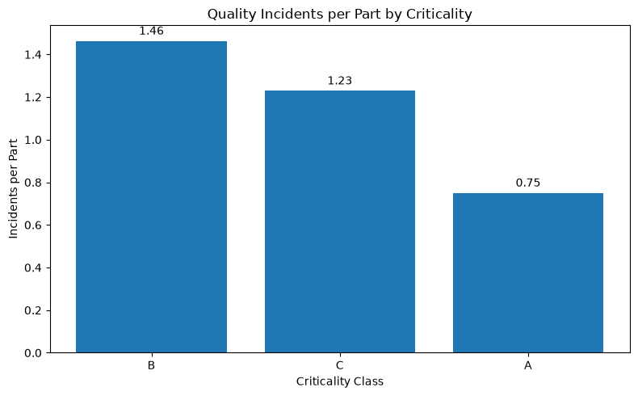

Completed project / Python & supply chain
AeroFlowFinding where supply-chain risk is concentrated.
I found approximately 3% on-time-in-full delivery for SUP033, recurring Electrical stock shortages and the highest combined stockout and backorder exposure at SITE02. Using Python, pandas and Matplotlib, I compared supplier, inventory, forecast and quality data to identify where the team should investigate first.
Independent portfolio project · Supply-chain analysis
Explore the repository ↗Finding 01
Supplier delivery reliability
SUP033 achieved approximately 3% on-time-in-full delivery across 631 purchase orders. Average delivery was around 6.1 days late. I would prioritise a recovery review with Procurement and Supplier Quality, tracking OTIF and delivery delay.

Finding 02
Electrical inventory availability
Electrical recorded approximately 16 stockouts per part, around twice the LandingGear rate. I would review replenishment and safety-stock settings for the parts with recurring availability issues.

Finding 03
Inventory exposure by site
SITE02 had the highest combined stockout and backorder exposure. I would investigate replenishment performance and inventory policy there, with particular attention to critical Electrical parts.

Finding 04
Forecast error by part family
Cabin had the highest mean absolute forecast error, at approximately 2.49 units, alongside low stockout exposure. The two measures highlight different priorities; this comparison alone does not establish the causes of stockouts.

Finding 05
Quality burden by criticality
Class B recorded approximately 1.46 quality incidents and 1.89 scrap units per part. Comparing rates per part helps avoid treating a larger group as higher risk simply because it has more incidents.

What I would do next
Turn priorities into focused reviews.
I would start with SUP033 delivery reliability and Electrical availability at SITE02. Procurement, Inventory Control and Site Operations would need to validate the findings against their operational context before making changes.
For Demand Planning, I would target the groups with the highest forecast error and track mean absolute error (MAE), rather than assume that a forecast change will resolve inventory problems. For Quality, I would track incidents and scrap per part when reviewing Class B.
These are recommendations from the analysis. I have not claimed reductions in stockouts, delivery delays or costs from implementing them.
The business question
Where should the team act first?
Late deliveries, shortages and quality problems can disrupt an operation. I analysed four datasets—parts, purchase orders, supply-chain history and quality incidents—to compare suppliers, sites and part families.
I focused on both the scale of the problem and the comparison being made. Per-part and per-order measures helped me distinguish concentrated risk from differences in group size.
My approach
From source data to operational priorities
Profile and clean
I reviewed data types, missing values and quality issues, then standardised fields and created analysis flags in pandas.
Compare performance
I grouped and joined the cleaned data to explore delivery reliability, stockouts, backorders, forecast error and quality burden.
Explain the findings
I used Matplotlib charts to highlight outliers and documented proposed actions, responsible teams and measures to track.
Limitations
What the data cannot tell me
The historical data does not capture every supplier capacity constraint, transport disruption or external condition. Stockout and backorder counts do not quantify financial loss or production impact, and recorded quality incidents may omit unreported issues.
MAE measures the size of forecast errors in units. It does not capture all forecast bias, and comparisons should also account for demand scale and volatility.
My notebooks, data and original charts are in the AeroFlow repository.